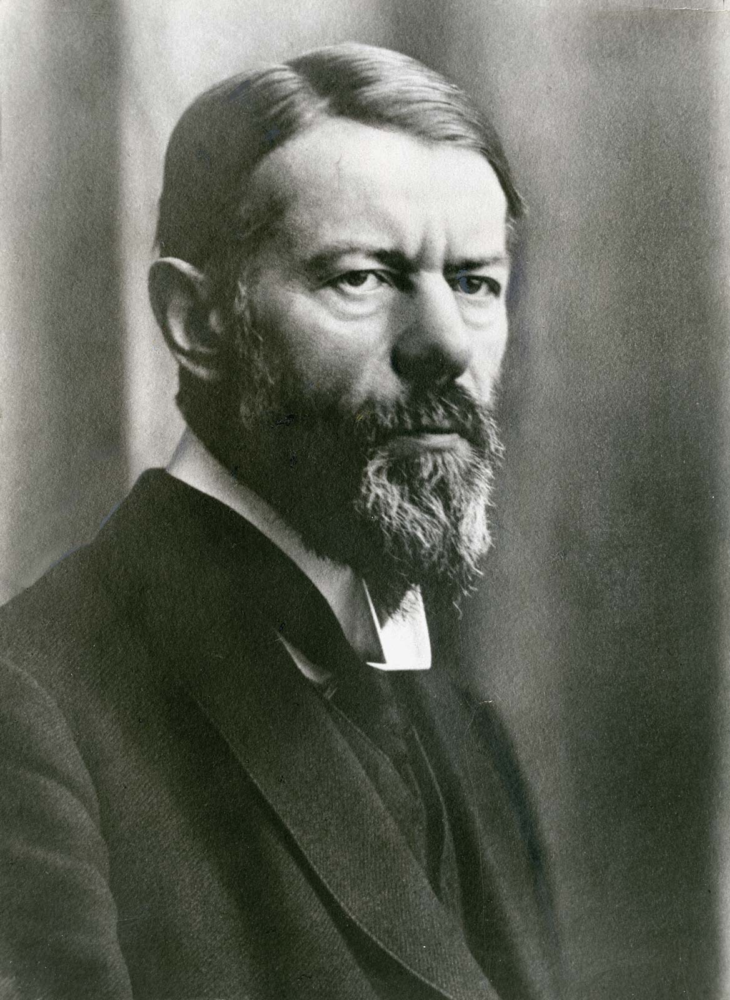

Entre os grandes pensadores da Sociologia, Max Weber (1864-1920) é considerado um dos autores mais influentes. Seus trabalhos possuem enorme abrangência de assuntos e voltam-se para áreas do pensamento político, do Direito, da História e da Economia. Essa característica acabou tornando-se altamente valorosa por razões aparentes: o mundo social está em contato direto com todos esses ramos aos quais Weber dedicou seus trabalhos.
Tendo sido precedido por outros dois grandes pensadores da área da Sociologia, Karl Marx e Émile Durkheim, Weber também tentou compreender as mudanças sociais que se desenvolviam no cerne das grandes cidades que viviam a Revolução Industrial. Por meio de estudos com base em observações empíricas, Weber identificou pontos centrais sobre os quais construiu conceitos-chave que serviram como base do restante de suas teorias.
 Max Weber: sociólogo, jurista e economista alemaõ.Ação Social para Max Weber
Talvez o conceito mais importante da teoria weberiana seja o de “ação social”, que, segundo o autor, deveria ser o principal objeto de estudo da Sociologia. Weber estava mais preocupado com aspectos mais próximos ao indivíduo justamente por acreditar que não era apenas a estrutura das instituições ou a situação econômica do sujeito que motivaria suas ações. Para Weber, as ideias, as crenças e os valores eram os principais catalizadores das mudanças sociais. Ele acreditava que os indivíduos dispunham de liberdade para agir e modificar a sua realidade. A ação social seria, portanto, qualquer ação que possuísse um sentido e uma finalidade determinados por seu autor. Em outras palavras, uma ação social constitui-se como ação a partir da intenção de seu autor em relação à resposta que deseja de seu interlocutor.
As relações humanas e, por sua vez, as ações que estão inseridas no contexto dessas relações possuem sentido graças aos seus atores. Para que se compreenda o processo de comunicação e de interação social, é necessário que se compreenda o sentido das ações que ali existem e, ainda mais importante, o objetivo do autor da ação em seu esforço comunicativo. Para melhor clarificar a explicação, podemos exemplificar com a ação de um aperto de mãos, que, genericamente, pode conter uma infinidade de significados. No entanto, o autor da ação, ao realizá-la, pretende que seu interlocutor apreenda o sentido que desejou incutir em seu ato, e não apenas que ele entenda o sentido genérico do ato de apertar as mãos.
Tipos de ações sociais
Weber ainda salientou quatro tipos de ações sociais: a ação racional com relação a fins, a ação racional com relação a valores, a ação afetiva e a ação tradicional. A ação racional com relação a fins refere-se às ações tomadas com um fim específico em mente, isto é, o autor busca atingir um objetivo e age racionalmente para atingi-lo. Já a ação racional com relação a valores refere-se a ações que são tomadas segundo os valores morais do sujeito que a pratica. A ação afetiva configura-se quando um sujeito age com base em seus sentimentos sem levar em consideração o fim que deseja atingir. A ação tradicional está relacionada com o agir baseado no costume e no hábito, isto é, o sujeito age pelo pressuposto da tradição sem o apoio da razão.
Racionalização do mundo social
O trabalho de Weber estende-se também a um fenômeno que ele acredita ser de grande importância para o mundo moderno e que está relacionado com as mudanças estruturais, culturais e sociais que as sociedades modernas passaram no decorrer do tempo. Trata-se da “racionalização do mundo social”, isto é, mudanças profundas no cerne do pensamento do indivíduo moderno e das instituições do Estado, como a gradual construção do capitalismo e a monstruosa explosão do crescimento dos meios urbanos, que se tornaram as bases da reordenação das organizações tradicionais que predominavam até então.
A preocupação de Weber estava em tentar apreender os processos pelos quais o pensamento racional, ou a racionalidade, impactou as instituições modernas, como o Estado e os governos, e, ainda, o âmbito cultural, social e individual do sujeito moderno. Em sua denominação das diversas formas de racionalidade, Weber fez distinção de duas principais formas: a racionalidade formal e a racionalidade substantiva.
Tipos de racionalidade
A racionalidade formal relaciona-se com as formas metódicas e calculistas do sistema jurídico e econômico das sociedades modernas. Está ligada aos aparelhos institucionais que se estruturam de forma burocrática, organizando-se em uma hierarquia delimitada por regras fixas. A racionalidade substantiva aproxima-se da racionalidade formal, mas se difere em sua conduta, que não é voltada para fins. Isso quer dizer que ela leva em consideração o contexto social em que se insere, sendo racional quanto à disposição dos valores que orientam aquele mundo social específico.
Tipos ideais
Outra contribuição de Weber para o pensamento sociológico foi a conceituação dos tipos ideais, ferramenta teórica amplamente usada ainda hoje. O estabelecimento de tipos ideais não busca construir tipologias genéricas nem mesmo busca classificar de maneira inflexível o objeto em questão, como é o caso das classificações que encontramos nas ciências naturais. Os tipos ideais servem como parâmetro de observação, um conceito teórico abstrato com características delineadas que serve apenas como ponto de comparação entre o objeto observado e a abstração teórica. Trata-se de modelos conceituais que raramente, ou quase nunca, existem integralmente. Dessa forma, é possível que olhemos, por exemplo, para o sistema político de um país munidos de um tipo ideal, como o da democracia, e, a partir da comparação, classificá-lo como sendo ou não uma nação democrática em um ou outro sentido. Nessa comparação, ainda que não sejam observadas todas as características de um modelo de democracia, esse sistema político ainda poderia ser considerado como democrático se a maior parte de sua organização fosse condizente com a de um modelo democrático.
De todas as formas, a Sociologia compreensiva de Max Weber representou grandes avanços teóricos para o pensamento sociológico. O valor de seu trabalho é inestimável, de forma que grande parte dos trabalhos que investigam fenômenos recentes busca auxílio em suas obras.
Texto de: Brasil Escola ·